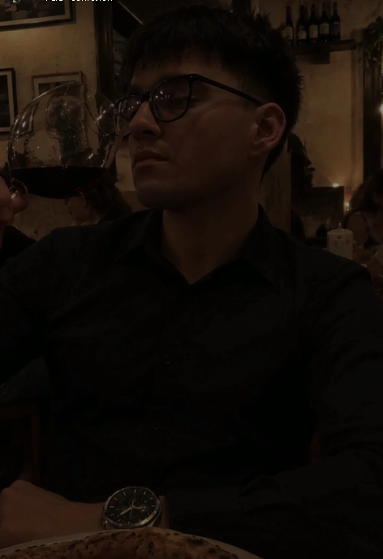

Gym Local Page (GLP)
Desarrollo de una página web relacionada con el sector del fitness, utilizando HTML y CSS. Proyecto gestionado mediante Git y GitHub, con despliegue mediante GitHub Actions y Vercel.
Tecnologías: HTML, CSS, Git, GitHub y Vercel.
Estudiante de DAM interesado en la tecnología y la programación.

Soy estudiante de Desarrollo de Aplicaciones Multiplataforma en el IES Dr. Lluís Simarro. Anteriormente completé el ciclo de Sistemas Microinformáticos y Redes. Me gusta aprender mediante la práctica y desarrollar proyectos para mejorar mis conocimientos.
Desarrollo de una página web relacionada con el sector del fitness, utilizando HTML y CSS. Proyecto gestionado mediante Git y GitHub, con despliegue mediante GitHub Actions y Vercel.
Tecnologías: HTML, CSS, Git, GitHub y Vercel.
Desarrollo de una aplicación web para gestionar información relacionada con equipos de fútbol. Utilización de JavaScript, AJAX y MockAPI para trabajar con datos y actualizar información.
Tecnologías: HTML, CSS, JavaScript, AJAX y MockAPI.
Realización de ejercicios y aplicaciones web utilizando PHP para gestionar la lógica del servidor y MySQL para almacenar y consultar información.
Tecnologías: PHP, MySQL y HTML.
Prácticas de administración de sistemas mediante Docker y Windows Server, trabajando con servicios de red y Active Directory.
Tecnologías: Docker, Windows Server y Active Directory.
Desarrollo web: HTML, CSS y JavaScript.
Programación: Java y PHP.
Bases de datos: MySQL.
Control de versiones: Git y GitHub.
Sistemas: Windows Server y Active Directory.
Virtualización: Docker.
También tengo experiencia trabajando con AJAX y MockAPI en proyectos académicos.
Realización de prácticas formativas durante tres meses en GSport, dentro de mi formación de grado medio de Sistemas Microinformáticos y Redes.
Estudios actualmente en curso en el IES Dr. Lluís Simarro.
Ciclo formativo de grado medio completado.
La tecnología y la informática.
La fotografía.
El gimnasio y el deporte.